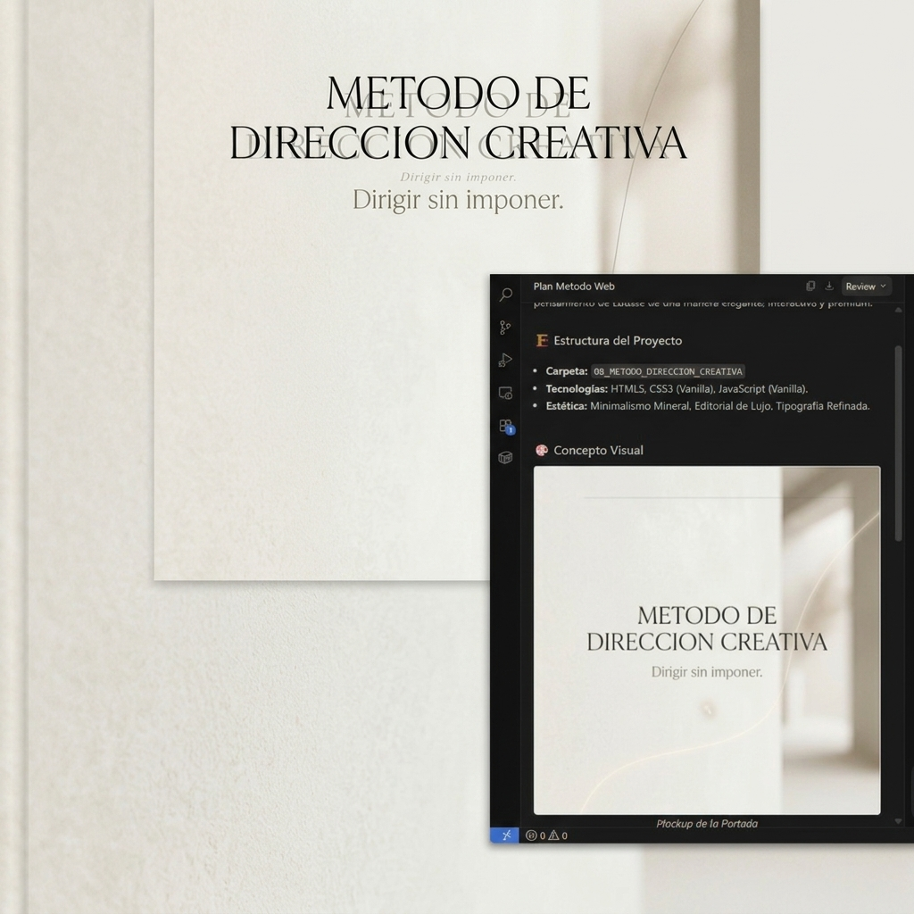

En música, nadie toca una canción porque se la expliquen nota por nota. La toca porque entiende la dirección: el pulso, la intención, el color emocional.
Mi método creativo funciona igual. No enseño tareas. Enseño hacia dónde debe ir la energía.
1.1. La dirección como vectorUna dirección no es un objetivo. Es un vector: un desplazamiento.
En música sería: “más aire”, “menos ataque”, “abre el acorde”, “respira antes de entrar”. En creatividad es: “más frío”, “ahora líquido”, “hazlo respirar”, “no así”.
No digo qué hacer. Digo cómo moverse. Técnicamente, esto crea un espacio de búsqueda más amplio. Musicalmente, es como marcar el tempo sin imponer la melodía.
1.2. La dirección no es una ordenUna orden cierra. Una dirección abre. Una orden dice: “Haz esto.” Una dirección dice: “Vamos hacia aquí.”
La primera produce obediencia. La segunda produce interpretación.
En un grupo de música, si digo “toca exactamente esto”, mato la creatividad. Si digo “quiero que suene más roto, más sucio, más nocturno”, cada músico aporta su versión. Y el resultado es más rico. Mi método funciona igual.
1.3. La dirección como atmósferaUna dirección no es un dato. Es una atmósfera mental.
En música: “hazlo más húmedo”, “piensa en un pasillo largo”, “como si estuvieras lejos”. En arte: “más mineral”, “menos rígido”, “ahora espectral”.
La dirección no describe el resultado. Describe la sensación que debe producir.
1.4. Por qué la dirección funciona mejor que la instrucciónEn lo técnico, reduce el ruido cognitivo, permite exploración, genera coherencia sin rigidez, activa la creatividad del otro y produce sistemas, no tareas.
En lo musical, el músico no copia: interpreta. El grupo no obedece: respira junto. La obra no se ejecuta: se encarna.
En lo humano, nadie se siente controlado. Todos se sienten parte del proceso. La identidad individual se mantiene. El fin común se alcanza sin fricción.
1.5. La dirección como inicio del sistemaCada vez que doy una dirección, no estoy corrigiendo. Estoy fundando una ley interna.
En música, una dirección puede definir el sonido de un disco entero. En creatividad, una dirección puede definir un estilo entero. Así nacen MECHPASTOSSE, GESSOLUX, IRIS. No de una descripción. De una dirección.
1.6. Síntesis del capítuloLa dirección es el primer movimiento. No dice qué hacer: dice cómo pensar. No impone: orienta. No limita: abre. No enseña tareas: crea sistemas...
Eduardo Ramírez de Cartagena
